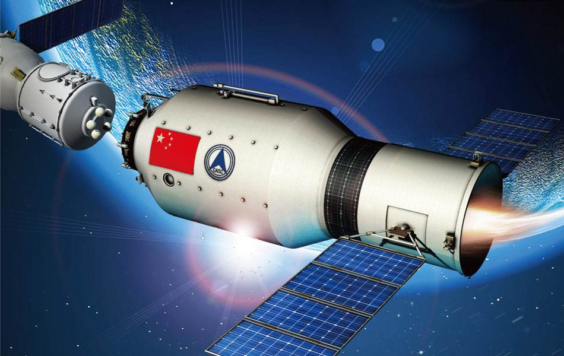
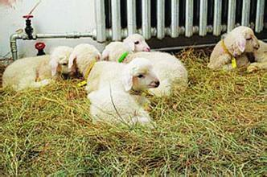

航空科技
-
神州一号
神舟一号飞船是中华人民共和国载人航天计划中发射的第一艘无人实验飞船，飞船于1999年11月20日凌晨6点30分在酒泉航天发射场发射升空，承担发射任务的是在长征-2F捆绑式火箭的基础上改进研制的长征2号F载人航天火箭。
-

天宫一号
天宫一号目标飞行器是中国首个自主研制的载人空间试验平台，于2011年9月29日21时16分03秒从酒泉卫星发射中心发射，全长10.4米，最大直径3.35米，内部有效使用空间约15立方米，可满足3名航天员在舱内工作和生活需要，设计在轨寿命两年。
-
东方红一号
东方红一号卫星，是中国发射的第一颗人造地球卫星，由以钱学森为首任院长的中国空间技术研究院自行研制，于1970年4月24日21时35分发射。该卫星发射成功标志着中国成为继苏联、美国、法国、日本之后世界上第五个用自制火箭发射国产卫星的国家。
-
风云一号气象卫星
风云一号气象卫星是中国研制的第一代准极地太阳同步轨道气象卫星。风云一号气象卫星共4颗，是中国的极轨气象卫星系列，共发射了4颗，即FY-1A卫星，FY-1B卫星，FY-1C卫星、FY-1D卫星。 风FY-1A卫星和FY-1B卫星分别在1988年9月7日和1990年9月3日发射升空。风云一号C卫星在性能上作的较大改进，被列入世界气象业务应用卫星的序列，风云一号D卫星从2000年开始正样设计，于2002年5月15日在太原卫星发射中心用长征四号B火箭发射升空
-
长征系列运载火箭
长征系列运载火箭是中国自行研制的航天运载工具。长征运载火箭起步于20世纪60年代，1970年4月24日"长征一号"运载火箭首次发射"东方红一号"卫星成功。 长征火箭具备发射低、中、高不同地球轨道不同类型卫星及载人飞船的能力，并具备无人深空探测能力。低地球轨道（LEO）运载能力达到14吨，[1] 太阳同步轨道（SSO）运载能力达到15吨，地球同步转移轨道（GTO）运载能力达到14吨。
电子科技
-
神威蓝光
神威蓝光，中国以国产微处理器为基础制造出本国第一台超级计算机 [1] 。 这台名为"神威蓝光"的计算机2012年9月16日安装在山东省的国家超级计算济南中心。神威系统每秒能进行约1千万亿次运算，很可能排在世界最快的20台计算机之列。更为重要的是，该系统采用的8700片神威1600微处理器是由本国的一家计算机研究所设计、在上海制造的。 中国比美国、韩国和日本等世界技术领先者使用的最先进的芯片制造技术落后三代。
-
可折叠屏幕
早在5年前，折叠手机就已经成了一些科技奇才的考虑对象，2018年11月，三星就已经向世人展示了自己的可折叠手机，折叠有什么优势？最重要的当然是体积问题，据传华为的手机展开后可达8英寸，大屏带来视觉体验。然而大屏手机装在口袋里却很难受，碎屏也很难受，试想我们可以将手机折起来装到口袋里该多有趣，折叠手机更容易携带，也能有效保护脆弱的屏幕。另外，用户还可以调节屏幕角度，找到适合自己的角度来使用手机.
-
8K电视
科技发展之快让我们这些用户有点不知所措了，就我来说，4K仿佛还是高科技啊，我才刚刚用上2736x1824的分辨率啊，三星竟已经上架了8K电视，不过其高达一万五千美元的价格已经让大部分人放弃了。据业内人士称，LG和SONY也将在2019年推出首款商业8K系列电视机，从而占领市场。
-
5G电话
2018年全球已经有些地区宣称实现了5G连接，第一代能兼容5G网络的设备要到2019年才能推出。虽然5G设备可能与4G LTE手机区别不大，但高速稳定的5G网络可以实现实时超清视频和3D视频的操作。虽说新技术的第一代使用者很可能成为小白鼠，但人们永远也忍不住对新体验的向往。
-
智能耳机
如今几乎所有的电子产品都已经内置语音助手，亚马逊Alexa，Google Assistant，Siri和微软的Cortanna都极大得方便了我们使用智能手机、平板电脑和个人电脑。而下一个带有语音助手的智能设备很可能是耳机，美国高通公司已经推出了一套开发工具包，使各大公司可以更容易地对Alexa语音识别进行测试，并将其融入于安卓智能手机配套使用的智能耳机中。苹果的AirPods2也很可能配备Siri语音助手的基本功能，如果真的实现了这一功能，我们再也不用拿出手机来拨通电话再装到口袋里了
-
无线充电
无线充电技术（英文：Wireless charging technology；Wireless charge technology ）源于无线电能传输技术，可分为小功率无线充电和大功率无线充电两种方式。 小功率无线充电常采用电磁感应式，如对手机充电的Qi方式，但中兴的电动汽车无线充电方式采用感应式 [1] 。大功率无线充电常采用谐振式（大部分电动汽车充电采用此方式）由供电设备（充电器）将能量传送至用电的装置，该装置使用接收到的能量对电池充电，并同时供其本身运作之用。 由于充电器与用电装置之间以磁场传送能量，两者之间不用电线连接，因此充电器及用电的装置都可以做到无导电接点外露。
生物科技
-
云南土著鱼类繁育及推广养殖技术
云南省水产技术推广站、玉溪市水产工作站、江川县水产技术推广站、云南省渔业科学研究院、版纳州水产技术推广站、大理州渔业工作站、德宏州水产技术推广站、元江县鱼种站等8家单位，在各自试验基地（渔场、增殖站）研究了10余种土著鱼类繁育技术，形成了规模化繁育鱼苗及养殖技术。
-
基于深层光谱治疗技术的康复设备
中国科学院苏州生物医学工程技术研究所将雄厚的光学基础与生物医学相融合，采用多项专利技术和特殊工艺研究出与人体对光吸收曲线一致的特殊治疗光谱。该治疗光具有从可见光到近红外的超宽光谱，涵盖了多种有效治疗谱段，可用于慢性炎症、血管及组织再生、炎性疼痛、运动损伤、恶性疾病治疗等多个领域。研究人员利用专利技术滤除了易引起皮肤热灼伤作用的近红外B和C以及部分A段光谱，有效提高了现有光谱治疗技术的安全性，也因此可将治疗光功率提高至数百瓦，穿透深度可达皮下5cm以上，远远超过现有光疗产品的穿透深度，不仅对浅表病灶有直接的治疗效果，更可作用到腹腔、盆腔等深层病变组织。
-
动物摄入蛋白质的"饱腹信号"
人们已知促进进食的"食欲信号"，但对动物终止进食的神经分子机制知之甚少。记者8日从中国科学院生物物理研究所获悉，科学家们最新鉴定出诱导饱腹感的"饱腹信号"，有望为解决肥胖难题提供方法。 中国科学院生物物理研究所研究员李岩等人完成这项研究。他们以与人类基因同源性较高的果蝇作为动物模型，巧妙设计实验，从而在果蝇体内发现调控蛋白质进食行为的新分子"FIT"。
-
基于毒素-抗毒素系统的基因编辑新技术
高效的基因编辑技术是基础生物学和生物技术研究的核心技术，在生命科学和生物医学等领域扮演着日益重要的角色。基于细菌和古菌防御系统建立的高效遗传操作技术是基因组编辑领域的研究热点，如利用限制性修饰（RM）系统建立的DNA甲基化模拟系统（MoDMP）和利用规律成簇的间隔短回文重复序列建立的CRISPR技术。最近发现，毒素-抗毒素系统（Toxin-Antitoxin system）通过利用位于同一操纵子上的毒素和抗毒素基因的编码产物调节细胞的生长与死亡/休眠，使其适应各种胁迫条件，是原核细胞中普遍存在的一种防御系统.
-

转基因克隆绵羊
该项成果运用了分子生物学、基因转染、体细胞克隆、胚胎移植等技术,突破常规育种所无法实现的跨物种基因转移,从而使物种可以根据人们的意愿与需求,设计和创造出新的性状,改变家畜生产性能,同时也大大缩短了育种进程,加快了遗传育种的改良速度,促进畜牧业的快速发展。 该项成果的获得表明,将转基因动物技术应用于肉羊的育种改良是具有可行性的,通过进一步的育种研究工作可以创造新的性状,迅速改进生产功能,培育具有特殊功能的新品种,对肉羊生产从单一低质型向多功能高效型的快速转变,推动肉羊改良和畜牧业的可持续发展具有重大意义。
核能科技
-
原子弹
Atomic bomb是核武器之一，是利用核反应的光热辐射、冲击波和感生放射性造成杀伤和破坏作用，以及造成大面积放射性污染，阻止对方军事行动以达到战略目的的大杀伤力武器。主要包括裂变武器（第一代核武，通常称为原子弹）和聚变武器（亦称为氢弹，分为两级及三级式）。亦有些还在武器内部放入具有感生放射的轻元素，以增大辐射强度扩大污染，或加强中子放射以杀伤人员（如中子弹）。
-
中国第一艘核潜艇
中国海军第一艘核潜艇为091型攻击核潜艇"长征1号"。该艇于1970年12月26日下水，1974年8月1日服役，中国自此成为世界上第五个拥有核潜艇的国家。2013年10月29日，国防部网站称中国海军第一艘核潜艇退役，将作为博物馆展品。一群来自博物馆的工作人员列队登艇，进行例行养护。不久之后，这艘游弋大洋40余载、获得诸多荣誉的中国海军第一艘核潜艇将离开这个军港，作为一件展品供世人参观。
-
秦山核电站
秦山核电站是中国自行设计、建造和运营管理的第一座30万千瓦压水堆核电站，地处浙江省嘉兴市海盐县。由中国核工业集团公司100%控股，秦山核电公司负责运行管理。 秦山核电站采用目前世界上技术成熟的压水堆，核岛内采用燃料包壳、压力壳和安全壳3道屏障，能承受极限事故引起的内压 、高温和各种自然灾害。一期工程1985年开工，1991年建成投入运行。年发电量为17 亿千瓦时。二期工程将在原址上扩建2台60万千瓦发电机组，1996年已开工。三期工程由中国和加拿大政府合作，采用加拿大提供的重水型反应堆技术，建设两台70万千瓦发电机组，于2003年建成。
-
人造太阳
我国核聚变能研究开始于60年代初，尽管经历了长时间非常困难的环境，但始终能坚持稳定、逐步的发展，建成了两个在发展中国家最大的、理工结合的大型现代化专业研究所，即中国核工业集团公司所属的西南物理研究院（SWIP）及中国科学院所属的合肥等离子体物理研究所（ASIPP）。为了培养专业人才，还在中国科技大学、大连理工大学、华中科技大学、清华大学等高等院校中建立了核聚变及等离子体物理专业或研究室。科技部依托中国科大成立"国家磁约束聚变堆总体设计组"，中国科大核科学技术学院院长万元熙院士担任组长。
☀其实这不是新材料，而是非常古老...
☀太空飞机将像火箭一样...
☀科学是人类所积累的关于自然...
☀袁隆平致力于杂交水稻...
☀东方红一号卫星...
☀磁铁上旋转的小风车...
☀著名人物介绍...
☀关于本组...